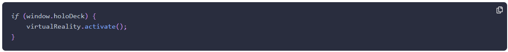

Novice to Ninja Ch.10: Testing adn Debugging
Strict Mode
-
ECMAScript 5 introduced a strict mode that produces more exceptions and
warnings and prohibits the use of some deprecated features. This is due to the
fact that strict mode considers coding practices that were previously accepted
as just being 'poor style' as actual errors.
-
Not using strict mode is often referred to as 'sloppy mode' as it’s forgiving
of sloppy programming practices. Strict mode encourages a better quality of
JavaScript to be written that befits a ninja programmer, so its use is
recommended.
-
ES6 introduced JavaScript modules. These are self-contained pieces of code
that are in strict mode by default, so the'use strict'declaration is not
required.
Linting Tools
-
Linting tools such asJS Lint,JS Hint,andES Lintcan be used to test the quality
of JavaScript code, beyond simply using strict mode. They are designed to
highlight any sloppy programming practices or syntax errors, and will complain
if certain style conventions are not followed, such as how code is indented. I
already installed ESLint into my VSCode. Refer to ESLint extension in VSCode.
Feature Detection
-
The recommended way to determine browser support for a feature is to use
feature detection. This is done using anifstatement to check whether an object
or method exists before trying to actually call the method. Feature detection
guarantees that the method is only called if it actually exists and fails
gracefully, without any exceptions being thrown, if the method doesn't exist.
